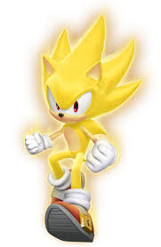
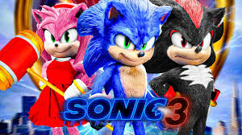

sonic
Sonic the Hedgehog is a video game series and media franchise created by the Japanese developers Yuji Naka, Naoto Ohshima, and Hirokazu Yasuhara for Sega. The franchise follows Sonic, an anthropomorphic blue hedgehog who battles the evil Doctor Eggman, a mad scientist.
facts about sonic
-
He Should Be Able To Swim
-
His Speed Was Inspired By Speedrunning
- He Can’t Run Without Sleep
-
He Had A Human Girlfriend
-
His Secret Middle Name
-
(We Thought) He Used To Be Called Mr. Needlemouse
- His Blue Fur Has Meaning
-
He Was Partly Inspired By Santa Claus
-
He Is A Result Of Nuclear Waste On Christmas Island
- His Personality Was Inspired By Bill Clinton
-
Dr. Eggman Was Destined To Be The Hero